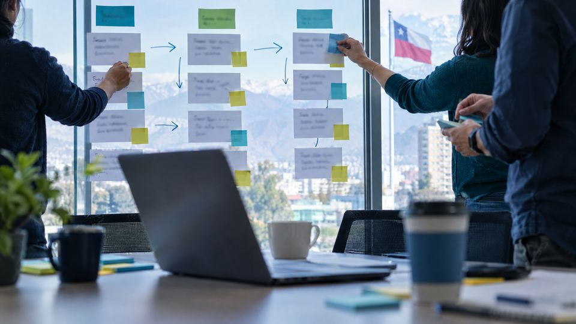
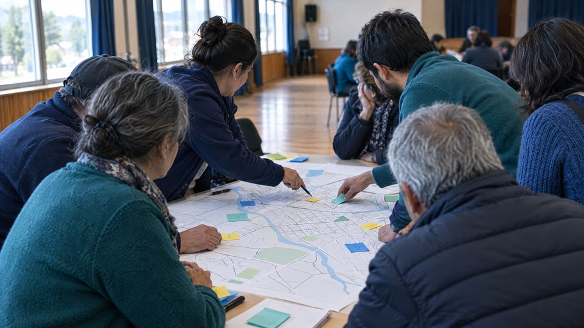
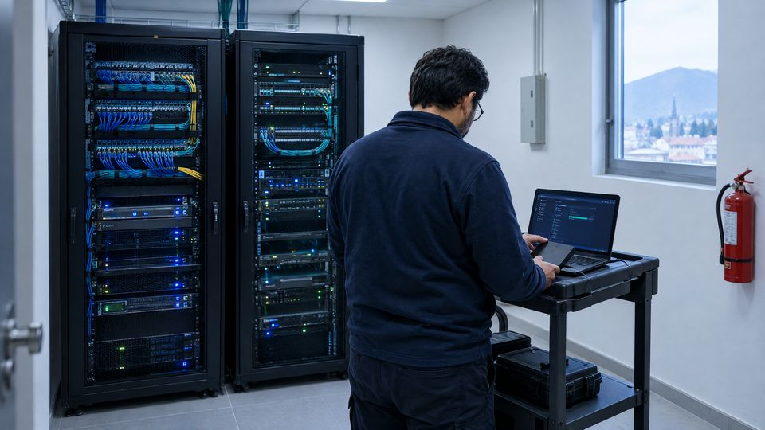
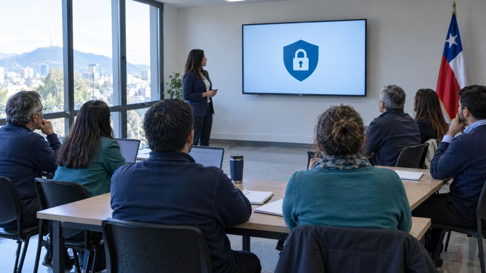

Nivel 1
Diagnóstico
30 a 45 díasGAP, inventarios, riesgos, brechas, madurez y plan de acción. Entender la situación y priorizar.
Consultoría en gestión municipal
Consultoría especializada para un Estado local más eficiente, transparente y cercano a las personas.
Una conversación por WhatsApp o videollamada.
Del diagnóstico a un impacto real
Vector Público
Integramos capacidades que normalmente se ofrecen por separado, para generar un impacto real y sostenible en los territorios.
Pasa el cursor por cada paso para ver qué incluye.Toca un paso para ver qué incluye.

Servicios
Cada servicio puede partir con un diagnóstico y crecer hacia la implementación y el seguimiento.

PLADECO, PLADETUR, diagnósticos territoriales, participación ciudadana, cartera de proyectos, indicadores y tableros.
Ver servicioMadurez digital, procesos, trámites, gestión documental, interoperabilidad, firma electrónica y hoja de ruta.
Ver servicioImplementación COSO III, mapas de riesgos, controles, KPI y KRI, matrices de responsabilidades y seguimiento.
Ver servicioDiseño organizacional, cargos, dotación, cargas de trabajo, procesos de RR.HH., gestión del cambio y capacitación.
Ver servicio
Seguridad de la información, activos críticos, accesos, respaldos, continuidad operacional y calidad de datos.
Ver servicioDiagnóstico de cumplimiento, inventario de datos, brechas, riesgos, políticas, derechos de titulares, terceros y capacitación.
Ver servicioProducto 2026 a 2027
Diagnóstico integral de cumplimiento y madurez en protección de datos personales, con nueve entregables y una hoja de ruta 2027 a 2028.
Publicada el 13 de diciembre de 2024. Vigencia: 1 de diciembre de 2026.
Hay un proyecto de ley que propone postergarla un año. Mientras no se publique, la fecha vigente sigue siendo esa.

Plazos
Cada servicio puede comenzar con un diagnóstico acotado y evolucionar hacia la implementación y el seguimiento.
Nivel 1
GAP, inventarios, riesgos, brechas, madurez y plan de acción. Entender la situación y priorizar.
Nivel 2
Políticas, procedimientos, controles, matrices, protocolos, rediseño e indicadores.
Nivel 3
Diagnóstico, implementación, capacitación, acompañamiento y seguimiento.
Nivel 4
Optimización de procesos, medición de desempeño y transferencia de capacidades.
Equipo
Socio Director
Contador Auditor. Experiencia en gestión financiera, control de gestión, auditoría y modernización del sector público.
Socio Director
Ingeniero Civil Industrial de la Universidad de Santiago y MBA de la Universidad de Chile. Más de 23 años en gestión de procesos y transformación digital.
Primer paso
Una conversación por WhatsApp o videollamada. Sales con un punto de partida y los pasos siguientes. Sin compromiso.